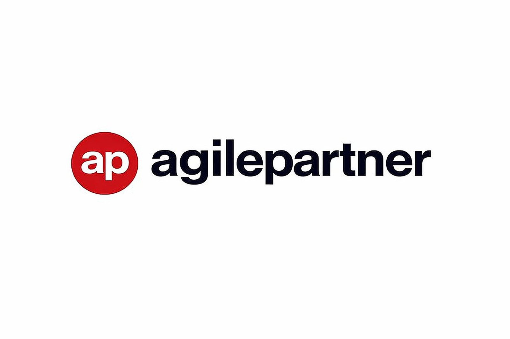
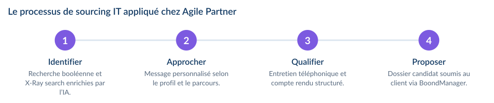
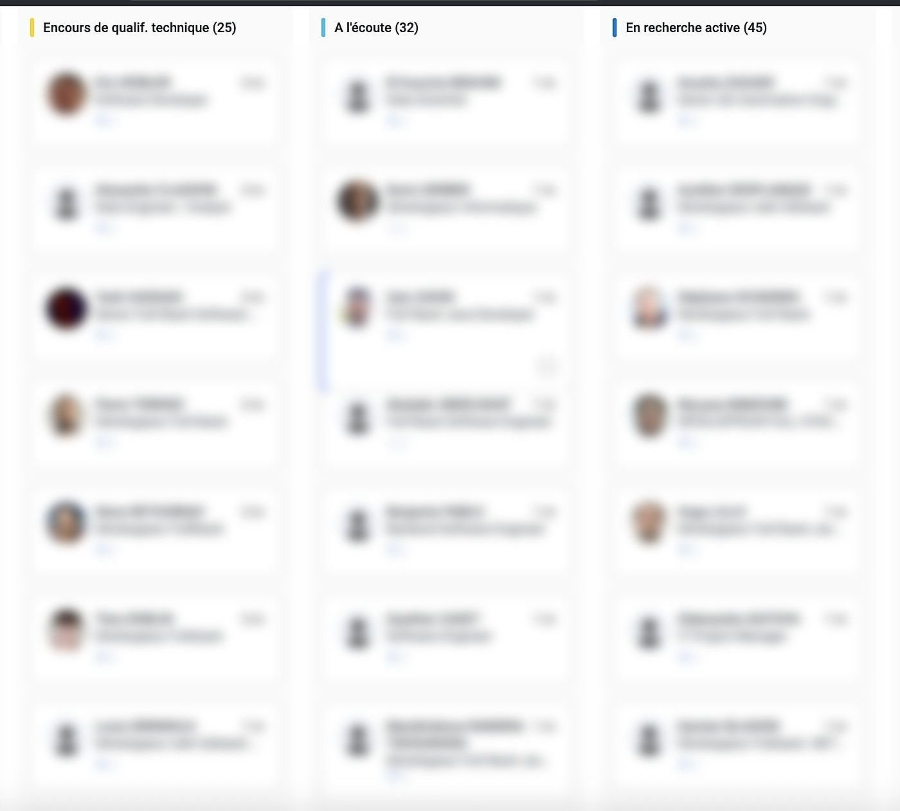
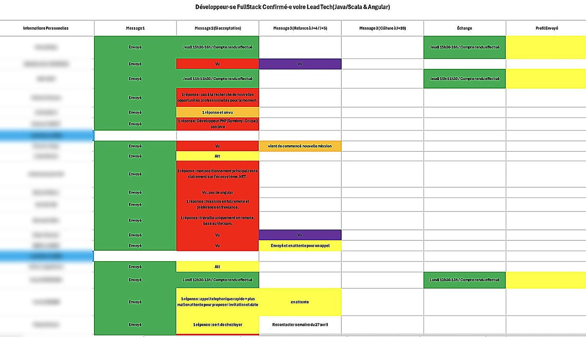
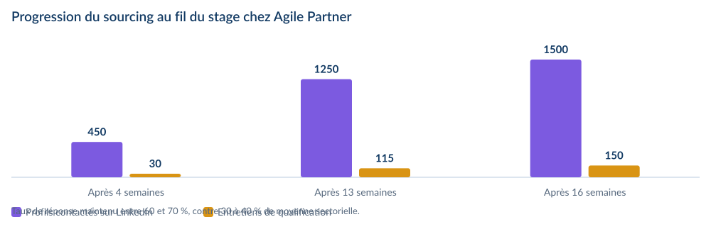
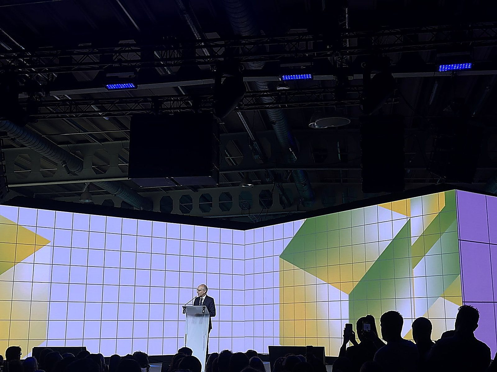
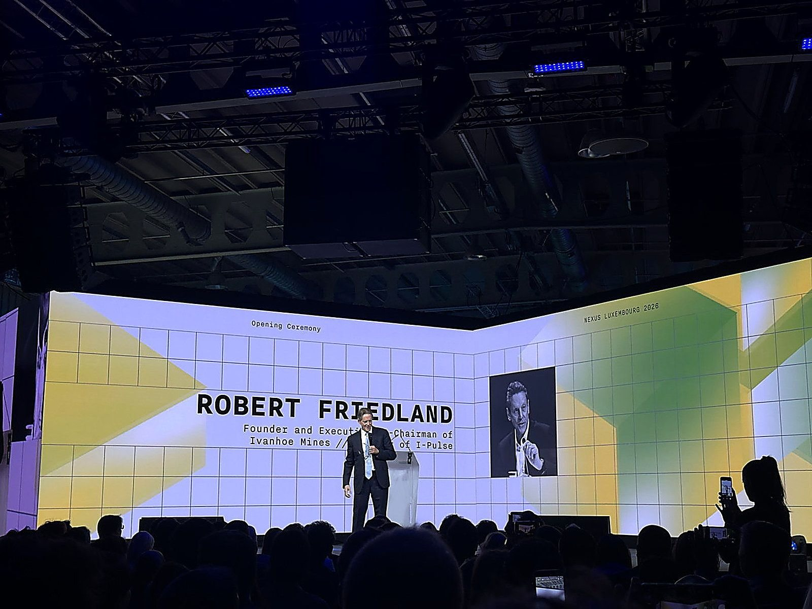

Stage 2026
Agile Partner — Kockelscheuer
Stage de fin d’études au sein d’une entreprise de services du numérique luxembourgeoise, sur un poste de Talent Acquisition dédié au sourcing de profils IT, autour d’une question centrale : comment l’intelligence artificielle transforme-t-elle l’activité de sourcing au sein d’une ESN ?
1 500+profils contactés
150+entretiens de qualification
60-70 %de taux de réponse
8familles de métiers traitées

Le contexte du stage
- Stage de fin d’études de seize semaines chez Agile Partner, entreprise de services du numérique luxembourgeoise d’une soixantaine de collaborateurs.
- Intégration au bureau Sales, composé de quatre personnes, avec un rituel Agile hebdomadaire le lundi matin.
- Fil rouge du stage et du mémoire : comment l’intelligence artificielle transforme l’activité de sourcing au sein d’une ESN.
La problématique du rapport
Comment l’intelligence artificielle transforme-t-elle l’activité de sourcing de talents IT au sein d’une entreprise de services du numérique, et où se situe la frontière entre automatisation utile et jugement humain indispensable ?
Agile Partner
- Société anonyme luxembourgeoise fondée en 2004, au moment où le secteur des technologies de l’information se recomposait après la crise des valeurs technologiques du début des années 2000.
- Un pari différenciant dès l’origine : combiner l’expertise technique avec les méthodes Agiles, alors balbutiantes — le Manifeste Agile venait d’être publié en 2001. Cette philosophie guide les recrutements, les méthodes de travail, la relation client et la culture interne.
- En 2026 : une soixantaine de collaborateurs, un siège au 42 Allée Louis Ackermann à Kockelscheuer, des certifications CSR et un engagement Benchmark Green IT, trois langues de travail (français, anglais, luxembourgeois) et une croissance délibérément maîtrisée.
- Quatre axes d’activité : développement logiciel sur mesure, conseil en transformation Agile (Scrum, Kanban, SAFe), design UX et accessibilité — notamment auprès de la Banque de Luxembourg — et sourcing de talents IT, cadre direct de mon stage.

Marché, positionnement et enjeux
- Une clientèle d’organisations luxembourgeoises et de la Grande Région pour lesquelles le système d’information est un actif stratégique : institutions financières de premier plan, organismes européens, entreprises e-commerce et organisations en transformation digitale.
- Face à InTech, Astek, Neofacto ou Accenture Luxembourg, un positionnement de niche : qualité de la relation client, profondeur de l’expertise Agile, sélectivité des recrutements et culture d’entreprise authentique plutôt que volume et prix.
- Deux enjeux majeurs en 2026 : le recrutement de profils IT hautement qualifiés dans un marché structurellement tendu, et l’intégration de l’intelligence artificielle dans les processus RH et de sourcing.

Intégration et poste occupé
- Le bureau Sales, composé de quatre personnes : Nicolas Vardavas (Directeur Associé), Lukasz Kieliszczyk (Directeur Commercial), Amine Tazi (Account Manager, mon tuteur) et moi-même.
- Un weekly meeting chaque lundi matin : objectifs de la semaine, avancées de la précédente et points d’attention — un rituel qui reflète les valeurs Agiles de transparence, d’inspection et d’adaptation.
- Deux premières semaines de montée en compétences : univers des ESN, vocabulaire technique IT (stacks technologiques, méthodes Agiles, architectures logicielles), outils de travail et processus internes.
- Une journée de télétravail hebdomadaire le vendredi, en réponse aux embouteillages quotidiens aux frontières luxembourgeoises depuis Montigny-sur-Chiers.

La mission centrale : le sourcing de talents IT
- Identifier, dans un marché très concurrentiel et sur-sollicité, des profils techniques correspondant aux besoins précis des clients — et les approcher de manière à susciter leur intérêt alors qu’ils ne sont, souvent, pas en recherche active.
- Première offre traitée : un poste de Développeur Full Stack Java / Angular, l’un des profils les plus recherchés du marché luxembourgeois.
- Huit familles de métiers traitées au fil du stage : Développeur Full Stack Java / Angular, Architecte Azure DevOps VB.Net / C#, Architecte Azure DevOps .Net / C#, Coach Agile, UX Designer / Product Designer, UX Researcher, Business Analyst, Enterprise Architect et IT Project Manager.
- Techniques mobilisées : recherche classique LinkedIn avec filtres avancés, Boolean search (AND, OR, NOT, guillemets et parenthèses), X-Ray search via Google pour indexer les profils non accessibles par la recherche standard, candidatures spontanées et recommandations internes.
- Un profil recruteur actif sur LinkedIn, avec une bannière #hiring visible renforçant la crédibilité des prises de contact.
- Gestion du pipeline dans BoondManager, l’ERP de l’entreprise, avec compte rendu d’entretien complet, et suivi parallèle sur des tableaux Excel par besoin client.

L’intelligence artificielle au service du sourcing
- ChatGPT Business, mis à disposition sur un compte professionnel dédié, a été l’outil d’IA le plus utilisé — non comme un gadget, mais comme un levier de productivité mesurable.
- Génération de requêtes booléennes optimisées : décrire le profil recherché à l’IA plutôt que construire manuellement des requêtes complexes, sources d’erreurs de syntaxe et chronophages.
- Personnalisation des messages d’approche, avec des variantes adaptées à chaque candidat, le recruteur gardant le contrôle et validant le message final.
- Automatisation des comptes rendus d’entretien à partir d’un résumé des points clés, directement exploitables dans BoondManager.
- Matching entre besoins clients et profils qualifiés : transformation du vivier en base de connaissances dynamique et interrogeable.
- Analyse comparative d’outils spécialisés — dont Collective Work pour la recherche ultra-ciblée. Trois enseignements : des fonctionnalités très convergentes, un gain de temps réel mais conditionnel à la maîtrise de l’outil, et un jugement humain qui reste central dans la qualification réelle du candidat.

Les résultats obtenus
- Profils contactés sur LinkedIn : 400 à 500 après quatre semaines, plus de 1 500 après seize.
- Taux de réponse : 60 à 70 %, stable malgré une multiplication par trois du volume traité.
- Entretiens de qualification : 30 échanges après quatre semaines, plus de 125 en français et plus de 25 en anglais au terme du stage.
- Familles de métiers traitées : d’un seul profil à huit familles de métiers.
- Dossiers soumis aux clients : un candidat envoyé sur chacun des besoins Architecte Azure DevOps (×2), Business Analyst, UX Designer, UX Researcher et Coach Agile.
- Un taux de réponse deux fois supérieur à la moyenne du secteur (30 à 40 % pour des approches non personnalisées), qui s’explique par le soin apporté à la personnalisation des messages, à la pertinence du ciblage et à la stratégie de relance.

Participation à des événements professionnels
- Fit4Inclusion : événement de clôture d’un programme luxembourgeois porté par l’ADEM, l’INDR et la House of Training, déployé sur deux années pour favoriser l’insertion professionnelle des personnes en situation de handicap ou de reclassement externe — 99 demandeurs d’emploi accompagnés.
- Une prise de conscience de la responsabilité sociale du recrutement, en écho direct au risque de biais algorithmiques analysé dans mon rapport : utilisée sans discernement, l’IA peut écarter mécaniquement des profils atypiques mais prometteurs.
- Nexus Luxembourg 2026, les 10 et 11 juin au LuxExpo The Box de Kirchberg : principal sommet européen consacré à l’intelligence artificielle, plus de 10 000 visiteurs venus de plus de 50 pays, plus de 400 intervenants sur cinq scènes et des centaines de startups et scaleups.
Difficultés rencontrées
- La prise en main de l’environnement : deux premières semaines denses, résolues par l’accompagnement constant de l’équipe Sales, une pratique immédiate et répétée des outils et une démarche proactive de questions.
- Un marché sur-sollicité : des profils rares, très sollicités et souvent déjà en poste, imposant des approches proactives, hautement personnalisées, et une réelle résilience face aux refus et aux non-réponses.
Préconisations formulées pour Agile Partner
- Définir une cartographie claire des tâches à automatiser et de celles à préserver comme espaces de valeur humaine.
- Standardiser et documenter les prompts avancés éprouvés pour capitaliser sur les bonnes pratiques et garantir une qualité constante.
- Généraliser le matching automatique entre besoins clients et profils qualifiés à l’ensemble du bureau Sales.
- Investir dans un abonnement LinkedIn Recruiter adapté aux besoins d’une ESN.
- Maintenir la dimension humaine comme avantage compétitif différenciant et rester vigilant sur les biais algorithmiques.
- Former l’ensemble du bureau Sales à une utilisation critique et éthique de l’IA.
Bilan de l’expérience
- Une maîtrise opérationnelle du processus de Talent Acquisition dans le secteur IT : sourcing avancé, qualification des candidats, gestion d’un pipeline structuré, automatisation intelligente par l’IA et outils professionnels de référence.
- Un environnement international, des échanges en anglais avec des candidats et lors d’événements d’envergure, et le développement de l’autonomie, de la résilience, de la rigueur et de la capacité à gérer des interlocuteurs multiples.
- La confirmation que les enseignements du BUT GEA parcours EMA sont des cadres d’analyse directement applicables, et de mon intérêt pour les ressources humaines, le recrutement et la transformation digitale des organisations — un intérêt prolongé par un master en management des ressources humaines à partir de 2026.
Outils et méthodes mobilisés
LinkedIn RecruiterBoolean searchX-Ray searchBoondManagerChatGPT BusinessExcel